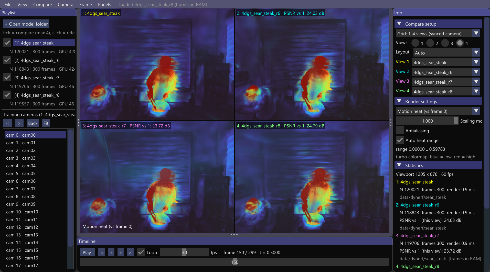
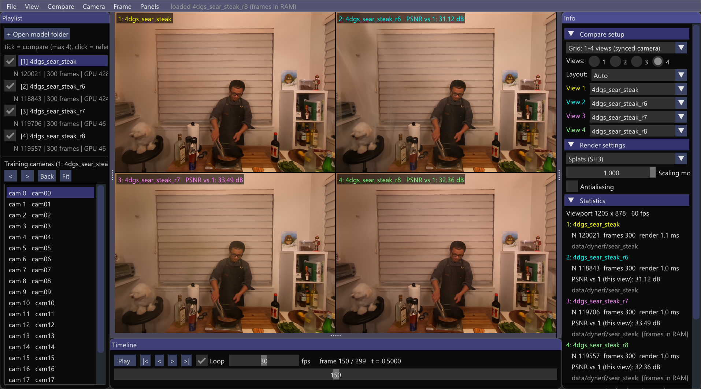
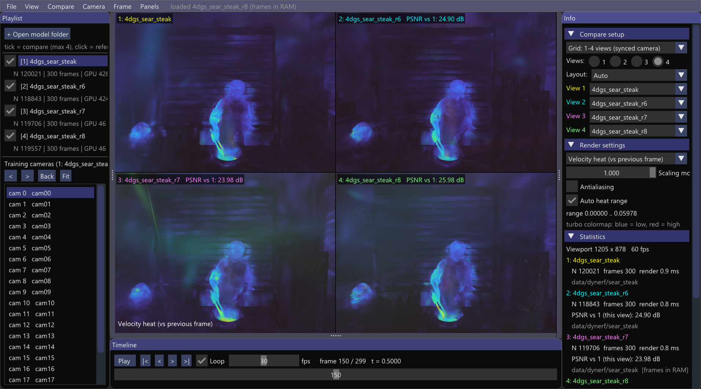
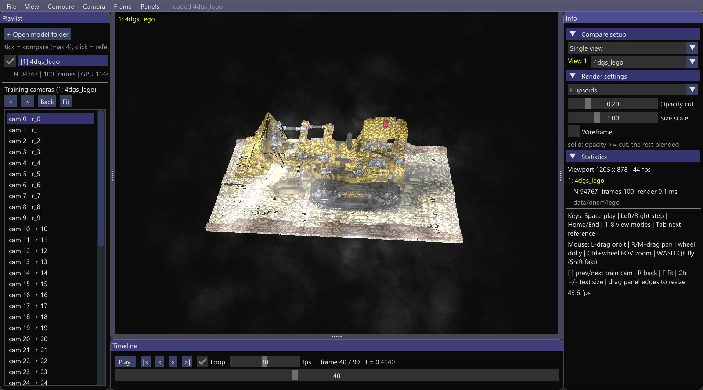
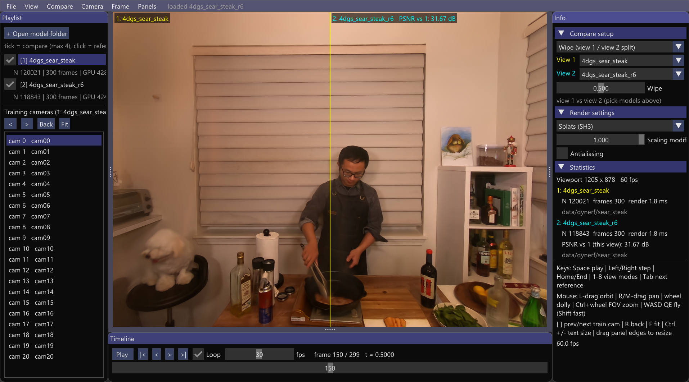
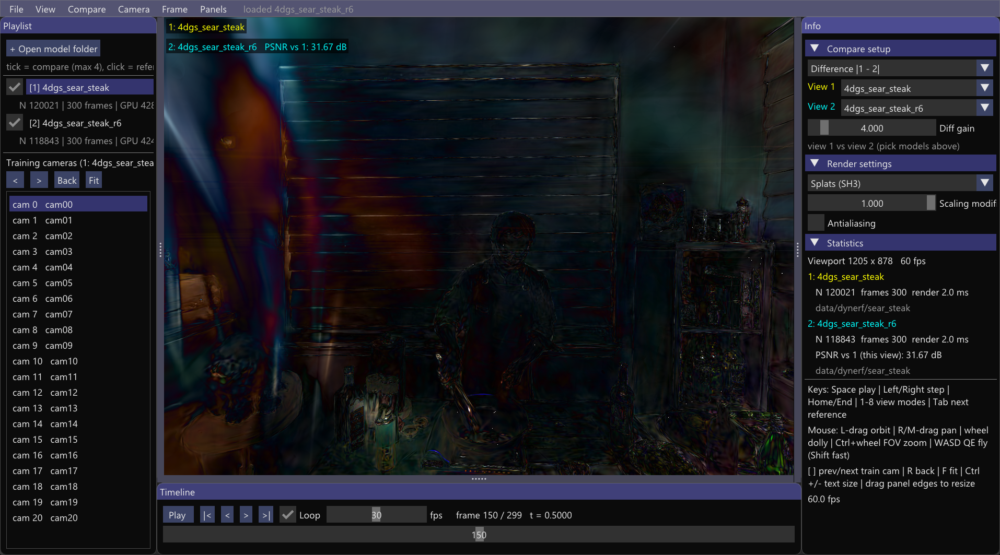

| 대상 | 3D/4D Gaussian Splatting 결과를 눈으로 확인하고 비교하려는 연구자 |
| 환경 | Windows 10/11 64비트, NVIDIA GPU(compute capability 7.0 이상) |
| 라이선스 | 비상업 연구·평가 용도 (Gaussian-Splatting License, SIBR core는 Apache-2.0) |
| 문서 버전 | 2026-11-23 |

3D Gaussian Splatting(3DGS) 논문의 공식 뷰어인 SIBR(Inria)은 정적인 3DGS 모델만 보여 줍니다. SIBR-4D는 이 원본 뷰어의 렌더링 코드(공식 CUDA 래스터라이저, SH 3차)를 그대로 쓰면서 다음을 더했습니다.
정적인 3DGS 결과 폴더(원본 SIBR이 여는 폴더)도 그대로 열립니다(1프레임으로 표시).
| 항목 | 요구 사항 | 없으면 |
|---|---|---|
| 운영체제 | Windows 10 / 11, 64비트 | — |
| GPU | NVIDIA, compute capability 7.0 이상(RTX 20 시리즈 이후). VRAM 8 GB 이상 권장 | 지원하지 않음 |
| NVIDIA 드라이버 | CUDA 12.4 이상을 지원하는 드라이버(550 이상) | nvidia.com/drivers 에서 설치 |
| Visual Studio | 2022 Community 또는 Build Tools, “C++를 사용한 데스크톱 개발” 워크로드 | setup.bat이 winget 설치를 제안 |
| Git | Git for Windows | setup.bat이 winget 설치를 제안 |
| conda | Miniconda 또는 Anaconda | setup.bat이 winget 설치를 제안 |
| 디스크 | 약 12 GB (CUDA 컴파일러 3 GB, PyTorch 2.5 GB, SIBR 빌드 3 GB 등) | — |
| 인터넷 | 첫 설치 때만 필요 | — |
GitHub 저장소 페이지에서 Code > Download ZIP으로 받아 압축을 풀거나, Git으로 내려받습니다. 경로에 한글이나 공백이 없는 폴더(예: C:\tools\sibr-4d-viewer)를 권장합니다.
git clone https://github.com/<저장소 주소>.git C:\tools\sibr-4d-viewer
폴더 안의 setup.bat을 더블클릭합니다. 모든 파일은 이 폴더 안에만 설치되고, 시스템 Python이나 다른 conda 환경은 건드리지 않습니다. 처음에는 20~40분 걸립니다(대부분 다운로드와 컴파일).
| 단계 | 하는 일 | 결과 |
|---|---|---|
| 1/6 검사 | 64비트 Windows, NVIDIA GPU와 compute capability, Git, Visual Studio C++ 도구, conda를 확인합니다. 없는 것은 winget으로 설치할지 묻습니다. CUDA 12.4가 지원하는 MSVC(14.3x/14.4x)를 자동으로 고릅니다. | 화면에 [ok] 표시 |
| 2/6 환경 | env\에 conda 환경을 만들고 Python 3.10(conda-forge)과 CUDA Toolkit 12.4.1(NVIDIA 채널)을 설치한 뒤, requirements.txt로 PyTorch 2.5.1(cu124), NumPy, CMake, Ninja를 설치합니다. 목록은 environment.yml(conda)과 requirements.txt(pip)에 있습니다. | env\ |
| 3/6 소스 | SIBR core(Inria, 커밋 4c4a953)와 4DGaussians(hustvl, 커밋 843d5ac)를 고정된 커밋으로 내려받습니다. | third_party\ |
| 4/6 패치 | sibr_patch\의 SIBR-4D 수정 파일을 SIBR 소스에 덮어씁니다. | — |
| 5/6 빌드 | CMake가 SIBR 의존 라이브러리(OpenCV, Boost 등, 약 0.5 GB)를 내려받고, Ninja + MSVC + nvcc로 뷰어를 빌드·설치합니다. | third_party\sibr_core\install\bin |
| 6/6 확인 | 뷰어 창을 몇 초 띄웠다 닫아 DLL이 모두 있는지 확인합니다. | “SIBR-4D is ready.” |
setup.bat 대신 환경을 손으로 만들 수도 있습니다. 이후 3~5단계(소스·패치·빌드)는 setup.bat을 다시 실행하면 이미 만든 환경을 그대로 쓰고 이어서 진행합니다.
conda env create -p .\env -f environment.yml .\env\python.exe -m pip install -r requirements.txt
setup.bat -Clean, 설치 질문에 모두 “예”로 답하려면 setup.bat -Yes를 씁니다. 각 단계의 기록은 logs\ 폴더(conda.log, pip.log, git.log, build.log)에 남습니다.run_viewer.bat (빈 창으로 시작) run_viewer.bat D:\models\sear_steak (모델 1개) run_viewer.bat D:\models\A D:\models\B D:\models\C D:\models\D (최대 4개 비교) run_viewer.bat D:\models\A --mode 8 (Ellipsoids 보기로 시작) run_viewer.bat D:\models\A D:\models\B --cmp 2 --frame 150 (와이프 비교, 150프레임에서 시작)
모델 폴더를 run_viewer.bat 아이콘 위에 끌어다 놓아도 됩니다.
열 대상은 ply 파일 하나가 아니라 모델 폴더입니다. 모델 폴더에는 다음이 들어 있습니다.
모델 폴더\ cfg_args 학습 설정 (sh_degree, white_background 등) cameras.json 학습 카메라 (카메라 목록·스냅에 사용) point_cloud\iteration_N\point_cloud.ply Gaussian (4D 모델은 기준 형상) sequence.g4d 4D 모델만: 모든 프레임 (export_4dgs.bat이 만듦)
| 여는 방법 | 무엇을 고르나 |
|---|---|
| File > Open model folder… | 모델 폴더를 선택합니다(파일 선택이 아님). |
| 창에 드래그 앤 드롭 | 모델 폴더, 그 안의 아무 파일(ply·sequence.g4d 등, 상위 모델 폴더를 자동으로 찾음), 또는 모델 폴더 여러 개가 들어 있는 상위 폴더(안의 모델을 모두 엶) 중 무엇이든 됩니다. |
| 명령줄 | 모델 폴더 경로를 인자로 줍니다. |
sequence.g4d가 없어서 움직이지 않는 기준 형상만 보입니다. 재생하려면 먼저 10장의 export_4dgs.bat으로 변환하세요. 원본 3DGS 결과 폴더는 그대로 열립니다.
| 영역 | 내용 |
|---|---|
| 메뉴바 | File(열기·닫기·종료), View(보기 모드·배경·안티에일리어싱), Compare(비교 방식·기준 모델 교체), Camera(학습 카메라·FOV·조작 감도), Frame(재생·이동·FPS), Panels(패널 표시·크기 초기화·글자 크기). 오른쪽 회색 글씨는 마지막 상태 메시지입니다. |
| Playlist (왼쪽) | 열린 모델 목록. 체크박스 = 비교에 포함(최대 4개), 이름 클릭 = 기준(보기 1)으로 지정, 이름 우클릭 = 기준 지정·닫기. 각 모델의 Gaussian 수, 프레임 수, 메모리. 아래에는 기준 모델의 학습 카메라 목록(< > Back Fit 버튼). |
| 보기 (가운데) | 렌더링 결과. 각 보기 왼쪽 위에 번호·모델 이름·PSNR이 표시됩니다. |
| Info (오른쪽) | Compare setup(비교 방식, 보기 수 1~4, 배치, 보기마다 모델 선택, 와이프·차이·오버레이 설정), Render settings(보기 모드와 모드별 설정), Statistics(렌더 시간, PSNR, 픽셀 값), 단축키 요약. |
| Timeline (아래) | Play/Pause, 처음·이전·다음·끝, Loop, 재생 FPS, 프레임 번호와 시간 t, 프레임 슬라이더. |
패널 크기: 보기 둘레의 점 무늬 띠(왼쪽·오른쪽·아래)를 마우스로 끌면 패널 폭과 높이가 바뀝니다. 글자 크기: Ctrl + / Ctrl - 또는 Panels 메뉴. 두 설정은 sibr4d_settings.txt에 저장되어 다음 실행에도 유지됩니다(Panels > Reset panel sizes로 초기화).
마우스가 보기 위에 있을 때 동작합니다. 모든 보기는 같은 카메라를 씁니다.
| 입력 | 동작 |
|---|---|
| 왼쪽 드래그 | 장면 중심(피벗)을 기준으로 회전 |
| 오른쪽 / 가운데 드래그 (또는 Shift + 왼쪽) | 화면 평행 이동 |
| 휠 | 확대·축소(피벗 쪽으로 다가가기) |
| Ctrl + 휠 | 화각(FOV) 줌 — 카메라 위치는 그대로 두고 확대(연속 줌 관찰용) |
| W A S D / Q E | 앞뒤·좌우 / 아래위 비행. Shift를 누르면 3배 빠름 |
[ / ] | 이전 / 다음 학습 카메라로 이동(0.35초 동안 부드럽게) |
| R 또는 Back 버튼 | 현재 학습 카메라 시점으로 복귀(학습 영상과 같은 시점) |
| F 또는 Fit 버튼 | 장면 전체가 보이게 맞춤 |
| 왼쪽 카메라 목록 클릭 | 해당 학습 카메라로 이동 |
회전·이동·비행 속도와 FOV 값은 Camera 메뉴에서 바꿉니다. Neu3D처럼 정면에서만 촬영한 씬은 크게 돌리면 보이지 않던 부분이 깨져 보이는 것이 정상입니다. 이때는 Back이나 [ ]로 학습 시점에 돌아오면 됩니다.
| 입력 | 동작 |
|---|---|
| Space / Play 버튼 | 재생·일시정지 |
| ← / → | 한 프레임 이전·다음(재생 중이면 멈춤) |
| Home / End | 첫 프레임 / 마지막 프레임 |
| 프레임 슬라이더 | 원하는 프레임으로 이동 |
| Frame > Go to frame | 번호를 입력해 이동 |
| fps 슬라이더 / Loop | 재생 속도(1~60 fps), 끝에서 처음으로 반복 |
여러 모델을 비교할 때 프레임 번호는 공통이며, 프레임 수가 적은 모델은 마지막 프레임에 머뭅니다. Neu3D 모델의 시간은 t = 프레임/300, D-NeRF 모델은 t = 프레임/(프레임 수−1)입니다.
Render settings의 목록, View 메뉴, 또는 숫자키 1~8로 바꿉니다.
| 키 | 모드 | 설명 / 용도 |
|---|---|---|
| 1 | Splats (SH3) | 원본 3DGS와 같은 렌더링. 기본 모드 |
| 2 | Splats (DC colour only) | 시점에 따라 바뀌는 색(SH 1~3차)을 빼고 기본색만. 시점 의존 색이 얼마나 기여하는지 확인 |
| 3 | Points (centres) | 각 Gaussian의 중심만 점으로 표시. 분포와 밀도 확인 |
| 4 | Motion heat | 0번 프레임 대비 이동 거리(파랑=작음, 빨강=큼). 어디가 움직이는지 확인 |
| 5 | Velocity heat | 직전 프레임 대비 이동 거리. 프레임 사이 떨림(flicker) 확인 |
| 6 | Opacity heat | 불투명도 0~1 |
| 7 | Scale heat | 가장 긴 축 크기(log10). 큰 Gaussian이나 floater 찾기 |
| 8 | Ellipsoids | 각 Gaussian을 타원체로 표시(원본 SIBR 방식). 설정: Opacity cut(이 불투명도 이상은 실선, 나머지는 반투명으로 섞음), Size scale(크기 배율), Wireframe(선으로만) |

열지도(4~7)의 범위는 Auto heat range가 장면 크기에 맞춰 정하고, 끄면 min / max를 직접 입력합니다. Splats 계열에서는 Scaling modifier(Gaussian 크기 배율)와 Antialiasing을 쓸 수 있습니다. 배경색은 View 메뉴에서 모델 기본값 / 검정 / 흰색 중에 고릅니다.

| 방식 | 설명 |
|---|---|
| Single view | 보기 1만 표시 |
| Grid: 1-4 views | Views(1~4)와 Layout(Auto / Row 가로 / Column 세로 / 2×2)을 고릅니다. Auto는 2~3개면 가로, 4개면 2×2. 각 보기에 “PSNR vs 1”이 표시됩니다. |
| Wipe | 한 화면을 좌우로 나눠 왼쪽은 보기 1, 오른쪽은 보기 2. 노란 분할선을 마우스로 직접 끌거나 Wipe 슬라이더로 옮깁니다. |
| Difference |1 − 2| | 두 렌더링의 픽셀 차이 절댓값 × Diff gain. 어디가 다른지 한눈에 봅니다. |
| Overlay | 보기 1 위에 보기 2를 Blend 비율(0~1)로 겹칩니다. Flicker를 켜면 1과 2를 지정한 Hz로 번갈아 보여 줍니다(작은 차이를 눈으로 찾기 좋음). |
Wipe / Difference / Overlay는 보기 1과 보기 2를 씁니다. 보기 2가 비어 있으면 열려 있는 다른 모델을 자동으로 채웁니다. 모델이 하나뿐이면 같은 모델의 다른 프레임(기본 +1, Compare setup의 Frame offset으로 조절)과 비교하므로, 프레임 사이 변화나 떨림을 볼 때 씁니다.


PSNR은 지금 화면에 보이는 시점에서 두 렌더링을 비교한 값입니다(학습 test 카메라 평가와 다름). 학습 카메라 시점(Back, [ ])에서 보면 해당 시점의 차이를 볼 수 있습니다. Statistics에는 마우스가 가리키는 픽셀의 RGB가 보기마다 표시됩니다.
4DGaussians(hustvl)로 학습한 결과를 SIBR-4D가 재생할 수 있는 모델 폴더로 바꿉니다. 학습 저장소의 변형 네트워크(scene/deformation.py)를 그대로 써서 모든 시간의 Gaussian을 계산해 저장합니다.
export_4dgs.bat --ckpt <4DGaussians 출력 폴더> --data <데이터셋 씬 폴더> --out <새 모델 폴더> [--frames N]
예) Neu3D
export_4dgs.bat --ckpt D:\4DGaussians\output\dynerf\sear_steak ^
--data D:\data\dynerf\sear_steak --out D:\models\sear_steak
예) D-NeRF
export_4dgs.bat --ckpt D:\4DGaussians\output\dnerf\lego --data D:\data\dnerf\lego --out D:\models\lego
| 인자 | 설명 |
|---|---|
| --ckpt | cfg_args와 point_cloud\iteration_N\(point_cloud.ply, deformation.pth 포함)가 있는 4DGaussians 출력 폴더. 가장 큰 iteration을 씁니다. |
| --data | 학습에 쓴 씬 폴더. transforms_train.json이 있으면 D-NeRF, poses_bounds.npy가 있으면 Neu3D(DyNeRF)로 자동 판별해 cameras.json을 만듭니다. 생략하면 --ckpt 폴더에서 찾습니다. |
| --out | 만들 모델 폴더 |
| --frames | 시간 단계 수. 기본값 Neu3D 300, D-NeRF 100 |
변환에는 GPU가 필요하며 Neu3D 300프레임이 약 1분 걸립니다. 결과 크기는 Gaussian 12만 개 × 300프레임 기준 약 4.5 GB입니다.
sequence.g4d는 모든 프레임의 변형 결과를 순서대로 담은 이진 파일입니다(리틀 엔디언).
헤더 32 바이트 : char[4] 'G4D1' | int32 N(Gaussian 수) | int32 F(프레임 수) | int32 SH 계수 수(16)
| float32 마지막 프레임의 t | 패딩 12 바이트
프레임마다 : 위치 float32[N×3] | 회전 fp16[N×4] (정규화 쿼터니언 wxyz)
| 크기 fp16[N×3] (exp 적용) | 불투명도 fp16[N] (sigmoid 적용)
| SH fp16[N×48] (계수 순서, 안쪽이 RGB)
위치만 float32로 저장해 큰 장면에서도 떨림이 생기지 않게 했고, 나머지는 fp16입니다. 다른 4D 방법(예: 앵커 기반 방법)도 프레임별 Gaussian을 이 형식으로 쓰면 그대로 볼 수 있습니다. 모델 폴더의 point_cloud.ply(기준 형상)와 N이 같아야 합니다.
재생을 매끄럽게 하려고 모든 프레임을 GPU 메모리에 올립니다. GPU 여유가 3 GB 아래로 떨어질 모델은 자동으로 프레임을 시스템 RAM에 두고 현재 프레임만 GPU로 복사합니다. Playlist에는 “GPU 4287 MB” 또는 “GPU 46 MB + RAM 4245 MB”처럼 표시됩니다. 두 방식 모두 재생 속도는 비슷합니다(RAM 방식은 프레임이 바뀔 때마다 약 15 MB를 복사).
| 예 (RTX 4070 Ti SUPER 16 GB, RAM 64 GB) | 결과 |
|---|---|
| Neu3D 4DGS 모델 4개 (각 4.3 GB) | 2개는 GPU, 2개는 RAM 방식. 4개 격자 60 fps |
| 증상 | 원인과 해결 |
|---|---|
| setup: “NVIDIA driver not found” | NVIDIA 드라이버를 설치·업데이트합니다. |
| setup: Visual Studio를 찾지 못함 | Visual Studio Installer에서 “C++를 사용한 데스크톱 개발” 워크로드를 추가합니다(MSVC v143 도구 포함). |
| setup: conda 단계 실패 | logs\conda.log 확인. 회사·학교 네트워크에서 conda 채널이 막혔을 수 있습니다. 프록시 설정 후 다시 실행합니다. |
| setup: 빌드 실패 | logs\build.log에서 “error”를 찾습니다. 의존 라이브러리 다운로드가 중간에 끊긴 경우 setup.bat -Clean으로 다시 빌드합니다. |
| 뷰어가 “애플리케이션 제어 정책으로 차단됨” | Smart App Control이 서명 없는 프로그램을 막는 것입니다(2장 참고). |
| 모델이 움직이지 않음 | 폴더에 sequence.g4d가 없습니다. export_4dgs.bat으로 변환합니다. |
| “not enough GPU memory” | 다른 모델을 닫거나(File > Close model) 다른 GPU 프로그램을 종료합니다. |
| 화면이 비어 있음 | 보기에 모델이 지정되지 않았을 수 있습니다. Compare setup에서 보기마다 모델을 고르거나 Playlist 체크박스를 켭니다. |
| 시점을 잃음 | Back(R) 또는 Fit(F)을 누릅니다. |
| 글자가 너무 작거나 큼 | Ctrl + / Ctrl − |
저장소에는 소스와 스크립트만 있고, 제3자 바이너리·데이터셋·학습된 모델은 들어 있지 않습니다. 아래 구성 요소는 모두 설치할 때 각 원 출처에서 사용자의 PC로 내려받습니다.
| 구성 요소 | 버전 / 출처 | 라이선스 |
|---|---|---|
| SIBR core | gitlab.inria.fr/sibr/sibr_core, gaussian_code_release_union @4c4a953 | Apache-2.0 |
| SIBR gaussianviewer (수정) | 같은 저장소 src/projects/gaussianviewer | Gaussian-Splatting License (비상업) |
| diff-gaussian-rasterization | graphdeco-inria @255c532 (SIBR CMake가 받음) | Gaussian-Splatting License (비상업) |
| 4DGaussians | github.com/hustvl/4DGaussians @843d5ac (변환에만 사용) | Apache-2.0 |
| Boost / OpenCV / Assimp / Eigen / Embree | 1.71 / 4.8 / 4.1.0 / 3 / 3.6.1 (SIBR CMake가 받음) | BSL-1.0 / Apache-2.0 / BSD-3 / MPL-2.0 / Apache-2.0 |
| FFmpeg | 4.0.2 Windows 빌드 (SIBR CMake가 받음) | GPL-3.0 이상 |
| GLEW / GLFW / Dear ImGui / nativefiledialog | 2.0.0 / 3.2.1 / 1.60 / SIBR 번들 | BSD·MIT / zlib / MIT / zlib |
| Python / NumPy | 3.10 (conda-forge) / < 2.3 | PSF / BSD-3 |
| CUDA Toolkit | 12.4.1 (conda, NVIDIA 채널) | NVIDIA CUDA EULA |
| PyTorch | 2.5.1 cu124 | BSD-3 |
| CMake / Ninja | PyPI 최신 | BSD-3 / Apache-2.0 |
| 직접 설치: Visual Studio 2022, Git, Miniconda | — | 각 제품 라이선스 |
연구에 사용하면 3D Gaussian Splatting(Kerbl et al., SIGGRAPH 2023), SIBR(Bonopera et al.), 그리고 보고 있는 4D 방법(예: 4D Gaussian Splatting, Wu et al., CVPR 2024)을 인용해 주세요.